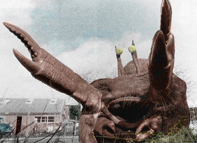

|
||||
| Home | ||||
|
 This is a list of fictional creatures and aliens from the universe of the long-running BBC science fiction television series Doctor Who, including Torchwood, The Sarah Jane Adventures, K-9 and K-9 and Company. It covers alien races and other fictional creatures, but not specific characters. Individual characters are listed in separate articles. Note that some information on the page is taken from spin-off media. |
By Pedro Riera